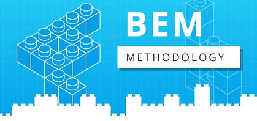

<!DOCTYPE html>
<html lang="pt-br"></html>
<html>
  <head>
    <meta charset="utf-8" />
    <meta http-equiv="X-UA-Compatible" content="IE=edge" />
    <title>BEM CSS Technical Documentation Page</title>
    <link rel="stylesheet" href="styles.css" />
    <meta
      name="viewport"
      content="width=device-width, initial-scale=1, minimum-scale=1, maximum-scale=1, user-scalable=no"
    />
    <link
      href="https://fonts.googleapis.com/css?family=Blinker|Comfortaa:700|Exo&display=swap"
      rel="stylesheet"
    />
    <link
      rel="stylesheet"
      href="https://use.fontawesome.com/releases/v5.6.3/css/all.css"
      integrity="sha384-UHRtZLI+pbxtHCWp1t77Bi1L4ZtiqrqD80Kn4Z8NTSRyMA2Fd33n5dQ8lWUE00s/"
      crossorigin="anonymous"
    />
    <script src="script.js"></script>
  </head>
  <body>
    <header id="navbar" class="navigation">
      
      <a class="icon" onclick="myFunction()"><i class="fa fa-bars"></i></a>
      <nav class="navbar-links" id="topbar">
        <a href="#intro" class="nav-link">Introdução</a>
        <a href="#bloco" class="nav-link">Bloco</a>
        <a href="#elemento" class="nav-link">Elemento</a>
        <a href="#bloco-elemento" class="nav-link">Devo Criar um Bloco ou Elemento?</a>
        <a href="#modificador" class="nav-link">Modificador</a>
        <a href="#estrutura" class="nav-link">Estrutura de Arquivos</a>        
        <a href="#external-links" class="nav-link">Links Externos</a>
      </nav>
    </header>

    <main>
      <section id="intro" class="section">
        <header>
          <h2>Introdução</h2>
        </header>
        <article>
          <p>
            <strong> BEM (Block, Element, Modifier)</strong> é uma metodologia
            baseada em componentes para desenvolvimento web. A ideia por trás
            disso é dividir a interface do usuário em blocos independentes. Isso
            torna o desenvolvimento da interface fácil e rápido mesmo com uma
            interface complexa, além de permitir a reutilização do código.
          </p>
        </article>
      </section>
      <hr />

      <section id="bloco" class="section">
        <header>
          <h2>Bloco</h2>
        </header>
        <article>
          <p>
            Um componente de página funcionalmente independente que pode ser
            reutilizado. Em HTML, os blocos são representados pelo atributo
            class. <br />
            Características:<br />
            O nome do bloco descreve sua finalidade ("O que é?" -
            <code class="line-code">menu</code> ou
            <code class="line-code">button</code>), não seu estado ("Qual é a
            aparência dele?" - <code class="line-code">vermelho</code> ou
            <code class="line-code">grande</code>).<br />
            Exemplo:
          </p>
          <p class="line-code">
            <code>&lt; div class = " error "&gt; &lt;/ div&gt;</code>
          </p>
          <p>
            Correto. O bloco <cite>"error"</cite> é semanticamente significativo
          </p>
          <br />

          <p class="line-code">
            <code>&lt; div class = "red-text"&gt; &lt;/ div&gt;</code>
          </p>
          <p>Incorreto, pois ele descreve a aparência.</p>
          <ul>
            <li>
              O bloco não deve influenciar seu ambiente, o que significa que
              você não deve definir a geometria externa (margem) ou
              posicionamento para o bloco.
            </li>
            <li>
              Você também não deve usar tag CSS ou Seletores de ID ao usar o
              BEM.
            </li>
          </ul>
        </article>
      </section>
      <hr />

      <section id="elemento" class="section">
        <header>
          <h2>Elemento</h2>
        </header>
        <article>
            <p>
                Uma parte composta de um bloco que não pode ser usada separadamente.<br>
                Características: <br>
                <ul>
                    <li>
                        O nome do elemento descreve sua finalidade ("O que é isso?" - <code class="line-code" >item</code>, <code class="line-code">texto</code>, etc.), não seu estado ("Que tipo ou com que se parece?" - <code class="line-code"> vermelho </code>, <code class="line-code"> grande </code>, etc.).            
                    </li>
                    <li>
                        A estrutura do nome completo de um elemento é <code class="line-code"> block-name__element-name </code>. O nome do elemento é separado do nome do bloco por um sublinhado duplo (<code class="line-code">__</code>).
                    </li>
                </ul>
                </p>
        </article>
      </section>
      <hr />

      <section id="bloco-elemento" class="section">
        <header>
          <h2>Devo Criar um Bloco ou Elemento?</h2>
        </header>
        <article>
          <h3>Crie um Bloco</h3>
          <p>Se uma seção do código pode ser reutilizada e não depende da implementação de outros componentes da página.</p>
        </article>
        <article>
            <h3>Crie um Elemento</h3>
            <p>
                Se uma seção de código não pode ser usada separadamente sem a entidade pai (o bloco). <br>
                A exceção são os elementos que devem ser divididos em partes menores - subelementos - para simplificar o desenvolvimento. Na metodologia BEM, você não pode criar elementos de elementos. Em um caso como este, em vez de criar um elemento, você precisa criar um bloco de serviço.
            </p>
          </article>
      </section>
      <hr/>

      <section id="modificador" class="section">
        <header>
          <h2>Modificador</h2>
        </header>
        <article>
          <p>
            Uma entidade que define a aparência, estado ou comportamento de um bloco ou elemento. <br><br>
            Características: <br>
            <ul>
                <li>
                    O nome do modificador descreve sua aparência ("Qual tamanho?" Ou "Qual tema?" E assim por diante - <code class="line-code">size_s</code>
                    ou <code class="line-code">theme_islands</code>), seu estado ("Como ele é diferente dos outros?" - <code class="line-code">disabled</code>, <code class="line-code">focused</code>, etc.) e seus 
                    comportamentos ("Como ele se comporta?" ou "Como ele responde ao usuário?" - como <code class="line-code">directions_left-top</code>).
                </li>
                <li>
                    O nome do modificador é separado do nome do bloco ou elemento por um único sublinhado (<code class="line-code">_</code>).
                </li>
            </ul>
          </p>
        </article>
      </section>
      <hr />

      <section id="estrutura" class="section">
        <header>
          <h2>Estrutura de Arquivos</h2>
        </header>
        <article>
          <p>
            A abordagem de componente adotada na metodologia BEM também se aplica a projetos na estrutura de arquivos. As implementações de blocos, elementos e modificadores são divididos em arquivos de tecnologia independentes, o que significa que podemos conectá-los individualmente. <br><br>
            Características: <br>
            <ul>
                <li>Um único bloco corresponde a um único diretório.</li>
                <li>O bloco e o diretório têm o mesmo nome. Por exemplo, o bloco <code class="line-code">header</code> está diretório <code class="line-code">header/</code>.</li>
                <li>A implementação de um bloco é dividida em arquivos de tecnologia separados. Por exemplo, <code class="line-code">header.css</code> e <code class="line-code">header.js</code>.</li>
                <li>O diretório de bloco é o diretório raiz para os subdiretórios de seus elementos e modificadores.</li>
                <li>Os nomes dos diretórios de elementos começam com um sublinhado duplo (<code class="line-code">__</code>). Por exemplo, <code class="line-code">header/__logo/</code> e <code class="line-code">menu/__item/</code>.</li>
                <li>Os nomes dos diretórios modificadores começam com um único sublinhado ( <code class="line-code">_</code>). Por exemplo, <code class="line-code">header/_fixed/</code> e <code class="line-code">menu/_theme_islands/</code>.</li>
                <li>As implementações de elementos e modificadores são divididas em arquivos de tecnologia separados. Por exemplo, <code class="line-code">header__input.js</code> e <code class="line-code">header_theme_islands.css</code>.</li>
            </ul>

            </p>
          </ul>
        </article>
      </section>
      <hr />

      

      <section id="external-links" class="section">
        <header>
          <h2>Link Externo</h2>
        </header>
        <article>
          <p>Link externo para a documentação técnica original.</p>
          <ul>
            <li>
              <a href="http://getbem.com/" title="bem" target="_blank">Sobre BEM</a>
            </li>
            <li>
              <a href="https://en.bem.info/" title="bem info" target="_blank">Metodologia BEM</a>
            </li>
          </ul>
        </article>
      </section>
    </main>
    <footer>
      <p>
        &#9400; 2021 Eduardo Di Alessandro&#8194; &bull; &#8194;<a href="https://github.com/cadurpo" target="_blank">Portfolio</a>
      </p>
    </footer>
  </body>
</html>
